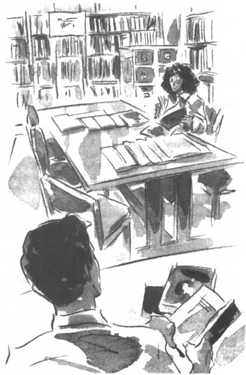

Listen to Part 1:
Sáng hôm sau, Tom dậy rất sớm. Cậu rửa mặt, chải đầu và mặc bộ đồ đẹp nhất. Khi đến thư viện, cậu lại chải đầu lần nữa. Có lẽ Rita sẽ lại vào thư viện hôm nay.
Buổi sáng trôi qua rất chậm chạp. Rất ít người vào thư viện. Vào buổi chiều, một vài đứa trẻ đến. Chúng chạy quanh thư viện và gây ồn kinh khủng. Một cậu bé làm bẩn một cuốn sách đắt tiền bằng sô cô la. Tom rất tức giận.
Năm giờ thư viện đóng cửa. Tom đứng ở cửa nhìn lên nhìn xuống dọc con phố. Cậu đợi đến sáu giờ nhưng Rita không đến. Ngày hôm sau, cậu làm như vậy. Và ngày sau đó nữa.
Mẹ cậu hỏi: "Có chuyện gì với con thế, Tom? Con bị ốm à?"
Tom đáp: "Không ạ, mẹ. Con ổn."
Mẹ cậu nói: "Thế sao con không ăn? Trông con tệ quá. Con có ngủ được không?"
Câu trả lời là không. Đêm nào Tom cũng nằm không ngủ được vì nghĩ đến Rita. Cậu đặt bức vẽ cô lên tường phòng ngủ. Cậu đang yêu.
Bốn ngày sau, Rita quay lại thư viện. Cô cười khi nhìn thấy Tom. Cô nói: "Cậu vẫn ở đây hả? Vẫn làm công việc nhàm chán này à?"
Tom đáp: "Tớ phải làm công việc này mà."
Rita mỉm cười. Cô ấy có đôi mắt sáng và đôi môi đỏ tuyệt đẹp. Hôm nay cô ấy mặc một chiếc váy đen rất đẹp.
Listen to Part 2:
Tom hỏi: "Cậu muốn làm gì, Rita?"
Rita trả lời: "Tớ muốn làm người mẫu thời trang. Nhưng tớ không xinh. Tớ cũng quá thấp. Mũi tớ quá to."
Tom nói: "Không phải thế đâu. Tớ nghĩ cậu xinh lắm."
Đột nhiên, Rita tỏ ra giận dữ.
Cô ấy nói: "Không, tớ không xinh! Tớ đã để dành được 300 bảng để học làm người mẫu. Sau đó, tớ đến mọi công ty người mẫu ở Silverton. Không công ty nào muốn nhận tớ."
Cô ấy đi đến bàn và ngồi xuống. Tom nhìn cô ấy cầm lên một cuốn tạp chí tên là Vogue. Trên tạp chí in đầy ảnh các người mẫu xinh đẹp trong những bộ trang phục tuyệt đẹp. Tom biết Rita muốn trở thành một trong những người phụ nữ trong cuốn tạp chí đó.
Tom rời bàn làm việc và đi đến chỗ Rita.
Rita nhìn lên và mỉm cười. Cô ấy nói nhỏ nhẹ: "Tớ xin lỗi, Tom. Tớ xin lỗi vì đã quát cậu. Tớ không vui lắm lúc này. Tớ rất muốn làm người mẫu. Nhưng chẳng ai chịu giúp tớ cả."
Tom hiểu. Cậu muốn vào đại học. Cậu muốn trở thành họa sĩ. Cậu muốn vẽ và tô màu suốt cả ngày. Cậu muốn đi tiệc vào buổi tối. Nhưng cậu lại ở đây trong thư viện nhàm chán này.
Tom nói: "Rita, tớ nghĩ là tớ có thể giúp cậu."
Listen to Part 3:
Rita hỏi: "Sao vậy?"
Tom nhanh chóng đáp: "Tớ có thể chụp vài bức ảnh của cậu. Chúng ta sẽ gửi chúng đến tất cả các tạp chí thời trang khác nhau ở London."
Tom đợi Rita nói gì đó. Cô ấy nhìn cậu rất kỹ. Cuối cùng cô ấy nói: "Tớ nghĩ đó là một ý kiến tuyệt vời, Tom."

Tom biết Rita muốn trở thành một trong những người phụ nữ trong cuốn tạp chí đó.